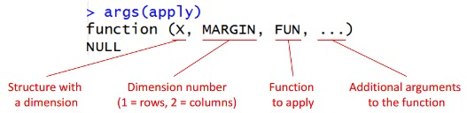
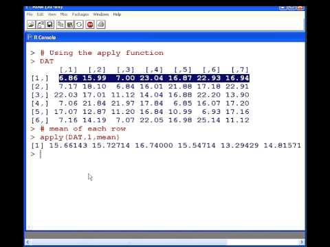

2.6 Functions and Loops
Components of a basic function
my_function <-function(x,y){ # create function as object (my_function <- function())
# define inputs of function (function(x,y))
# function is written between {} brackets
result=x^2+y^2 # what your function does with inputs
return(result) # return() gives the result as the output
}
my_function(2,3) # now try the function out## [1] 13A function with conditions
largeCpGi<-function(bedRow){ # function takes input one row of CpGi data frame
# generated earlier under "Read files in base R"
cpglen=bedRow[3]-bedRow[2]+1 # subtract column 3 value from column 2 value + 1
if(cpglen>1500){ # if the result (cpglen) meets this parameter # (is larger than 1500)
cat("this is large\n") # cat[used in place of print/return] "this is # large\n" --> the \n means print a new line
}
else if(cpglen<=1500 & cpglen>700){ # else if -- if the above was not true, # see if result meets these parameters
cat("this is normal\n")
}
else{ # if the result did not meet previous parameters
cat("this is short\n")
}
}
largeCpGi(cpgi.df[10,]) # function to take 10th row of data frame ## this is shortlargeCpGi(cpgi.df[10]) # what happens if you input this instead?## Error in `[.data.frame`(cpgi.df, 10): undefined columns selectedlargeCpGi(cpgi.df(10)) # or this?## Error in cpgi.df(10): could not find function "cpgi.df"Loops to repeat a function multiple times
result=c() # this is where we will keep the lengths. for now it is an empty vector.
for(i in 1:100){ # start a loop to iterate 100 times
len=cpgi.df[i,3]-cpgi.df[i,2]+1 # to calculate the length of each cpgi
# where i is each row of the data frame cpgi.df
result=c(result,len) # append the length to the result each time
}
result # check the result## [1] 277 360 383 1325 3498 1602 1317 250 871 226 788 300 1001 311 790
## [16] 224 1259 725 525 690 426 636 827 1010 237 601 484 297 968 441
## [31] 793 235 212 648 656 659 794 324 356 729 786 202 401 1787 1045
## [46] 265 203 498 455 203 821 745 1013 341 1795 801 333 885 520 497
## [61] 1403 1737 1192 1007 1142 1009 276 626 1440 512 552 344 268 233 273
## [76] 232 2353 456 937 941 985 1584 878 357 758 884 1355 979 1294 757
## [91] 786 807 1118 833 931 533 618 1965 321 1048Loops are not always the most efficient way to work in R. We can use special functions to perform loops.
In base R: the apply family


lapply applies a function to a single list or vector
mapply is like lapply but over multiple vectors/lists
vectorized function can be summed (+, rowSums, colSums)
In the tidyverse: purrr –> specifically map